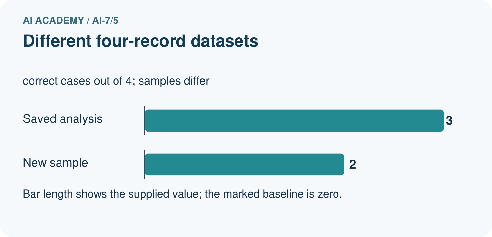
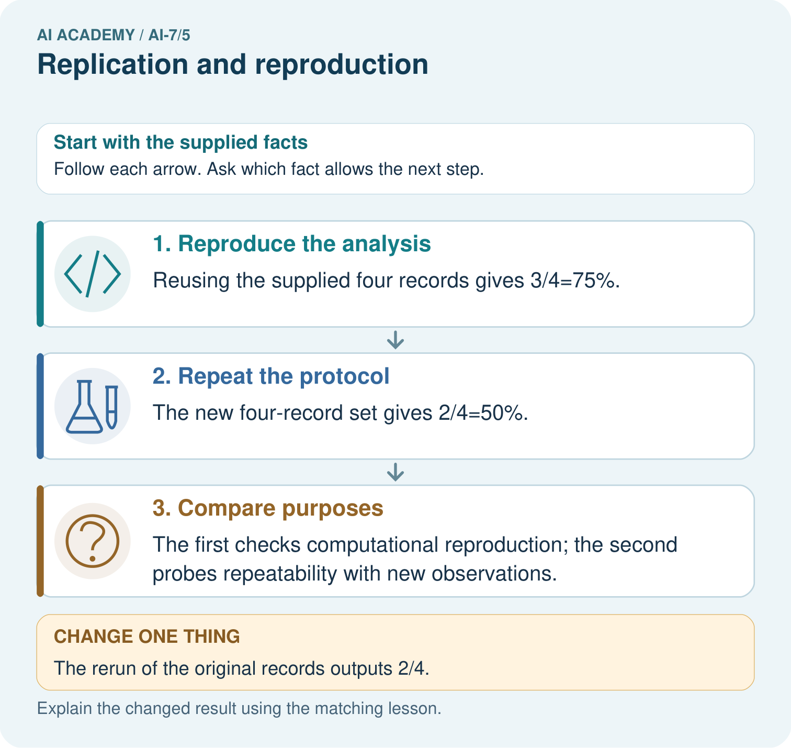

AI Academy · Level 7 · Grade 12 · Week 5 · Workbook
Replication and reproduction
Learn to understand, design, build, test and explain AI systems responsibly.
Project: Reproducible AI Research Study
Workbook · 1 of 12
Recall and choose your starting point
Try the recall before opening notes. Then use a different colour or a labelled second line to correct your explanation.
Methods results and limitations
Without opening the old lesson, explain one key idea from Methods results and limitations. Give an example and a mistake that the idea helps you avoid.
Reading a research claim
Without opening the old lesson, explain one key idea from Reading a research claim. Give an example and a mistake that the idea helps you avoid.
Workbook · 2 of 12
Practise with fading help
Use W2: Trace the worked case for Replication and reproduction. Record the answer once; the lesson and workbook refer to the same attempt.
| Given inputs | Procedure I chose | Middle steps | Result and check |
|---|---|---|---|
Workbook · 3 of 12
Individual reasoning check
Use the worked case for Replication and reproduction. Proposed explanation: “The worked result establishes every future case”. Decide whether this explanation is supported. Point to the step or supplied fact that decides; explain your repair if needed.
Workbook · 4 of 12
Independent transfer case
Independent case: Apply a new case independently
Team repeats old six queries, then evaluates four newly reserved queries. How many distinct cases and which are new evidence?
Attempt this case before feedback. Record any help. Earlier examples below are further practice; a case already practised with feedback cannot establish fresh transfer.
Workbook · 5 of 12
W1 Explain the mechanism
Explain the weekly mechanism in your own words. Use the worked scenario to name its input, decision rule and output.
Workbook · 6 of 12
W2 Trace the worked case
Partner reruns the same eight cases and gets the same score. Team counts sixteen independent cases. Show the intermediate steps and give the conclusion with its scope.
Workbook · 7 of 12
W3 Audit the limit
A report omits this qualification: Exact replay can preserve the original design flaws; new data can change conditions and needs its own record. Explain how omitting it could change a reader's interpretation, and write an accurate replacement.
Workbook · 8 of 12
W4 Apply a new case independently
Team repeats old six queries, then evaluates four newly reserved queries. How many distinct cases and which are new evidence?
Workbook · 9 of 12
W5 Design a revealing follow-up
For the worked scenario, propose one additional case that could reveal a failure, describe its expected outcome before running it, and explain what would need to remain fixed for a fair comparison. Do not reuse W4 as a new final test after receiving feedback.
Workbook · 10 of 12
Project checkpoint and reflection
Add a labelled replication and reproduction evidence sheet to Reproducible AI Research Study. Show how you can explain the mechanism and terminology of replication and reproduction. Use the supplied fictional case and keep its inputs, intermediate steps, calculation or prediction, and limitation. Connect this record to last week’s record; a matching answer without a trace is insufficient.
Workbook · 11 of 12
Feedback, return check and learning record
| Evidence | My record |
|---|---|
| Worked alone / hint / model | |
| First step I repaired and why | |
| New case checked later; date and result | |
| What I can now explain without notes | |
| One remaining question |
Revisit this idea with your teacher after a delay. Familiarity is different from explaining and using it on a changed case.
Workbook · 12 of 12
Pictorial case practice: Replication and reproduction
Same records versus new experiment. A team first reruns a supplied analysis, then collects new records with the same protocol.
Original recorded labels: [1,0,1,1]. Analysis counts correct cases. New independent set: [1,1,0,0]. Binary entries mean 1=correct and 0=incorrect.


Calculate the scores from the original and new four-record sets. Which activity reproduces saved analysis, which repeats the protocol, and why does a different rerun of the original data need investigation?
Support used: alone / hint / worked example. This record is practice evidence.
Project connection: For the Reproducible AI Research Study, retain an annotated worked trace and the changed-case reasoning. Connect the claim to its records, units and assumptions so another investigator can challenge or reproduce it.